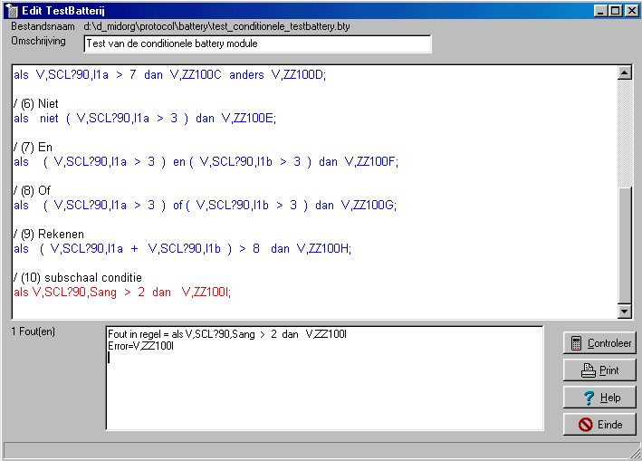

TestBatterijen
In principe is de testbatterij een simpele opsomming van een aantal achter elkaar uit te voeren testen.
Bij een aantal testen (zoals vragenlijsten) is het mogelijk om de resulaten van een afgenomen test te gebruiken als conditie om te bepalen wat de volgende test (niet noodzakelijkerwijs een vragenlijst) is die moet worden afgenomen (conditionele testen).
De interne bestandsopbouw is vernieuwd. Oude batterij bestanden worden echter automatisch vertaald.
Een testbatterij kan bestaan uit de volgende regels:
Het volgende voorbeeld geeft een voorbeeld van de bovenstaande 3 mogelijkheden/dit is een tekstregel
V,SCL90 ;
als V,SCL90,I3 > 4 dan V,SIP ;Hieronder een uitgebreider voorbeeld (met fictieve vragenlijsten).
|
zwart is verklarende tekst blauw is correct commando-regel rood is foute commando-regel Bij de uitvoering worden enkel correcte commando-regels uitgevoerd. |
|
Het allereerste karakter van deze regel moet een gewone slash "/" zijn. De tekst mag niet over meerdere regels verdeeld worden. Gebruik zonodig meerdere regels, die elk beginnen met een slash.
Een tekstregel mag in een test-regel (welke wel uit meerdere regels kan bestaan) voorkomen.
Een gewone testregel bestaat uit een test en dient afgesloten te worden met een punt-komma ";".
VoorbeeldV,SCL90;Betekent: neem de vragenlijst SCL90 ten alle tijde af.
Omdat testen van verschillende soort geen onderling unieke naam behoeven te hebben, moet aangegeven worden dat het om een vragenlijst handelt ("V,").
Bestaat uit een conditie, gevolgd door een test.
Deze regel dient eveneens afgesloten te worden met een punt-komma, en mag over meerdere regels worden uitgeschreven (met ertussen zelfs tekst-regels.
Voorbeeld:als V,SCL90,Smoeheid > 3 dan V,SIP anders V,CDC ;Betekent, als van de (reeds afgenomen) vragenlijst SCL90, op de subschaal moeheid meer dan 3 is gescored, dan moet de vragenlijst SIP worden afgenomen, zoniet dan moet de vragenlijst CDC worden afgenomen.
Omdat het minteken "-" gebruikt wordt als wiskundig aftrekken, moet in namen van testen dit teken vervangen worden door een vraagteken "?", voorbeeld vragenlijst SCL-90 moet dus als volgt worden opgegeven.V,SCL?90;Vraagnummers in vragenlijsten hebben een gelijke nummering als in het export-bestand. Hieronder enige voorbeelden, waarbij achter de punt komma, verklarende tekst is afgedrukt:...V,SCL90,I7...; Vraag 7, in geval slechts 1 antwoord
...V,SCL90,I8b...; Vraag 8, tweede subvraag, dus meerkeuze meerantwoorden vraag of enkele blokvraag
...V,SCL90,I9c2...; Vraag 9, derde subvraag, tweede blok, dus een dubbele blokvraagGetallen moeten worden geschreven in de Angelsaksische notatie, dat wil zeggen met een decimale punt (en niet met een komma).
Maak ruim gebruik van haakjes, want alle operatoren hebben hetzelfde hierarchies nivo,2+3*5 wordt geëvalueerd als (2+3)*5
2+(3*5) wordt geëvalueerd als 2*(3+5)Maak ruim gebruik van spaties en tabs, hetgeen de leesbaarheid vergroot.
Voeg omdezelfde reden tekstregels toe.
|
Operators |
Beschrijving |
|
+ , - , * , / |
optellen, aftrekken, vermenigvuldigen, delen |
|
> , < >= , => , <= , =< = |
groter dan, kleiner dan groter of gelijk dan, kleiner of gelijk dan gelijk |
|
... EN ... ... OF ... NIET ( ... ) |
logische EN, logische OF logische NIET |
|
ALS ... DAN ... ALS ... DAN ... ANDERS ... |
conditionele statements |
|
( ... ) , [ ... ] |
haken om volgorde van bewerkingen te reguleren |
|
spaties en TABs |
worden gebruikt om symbolen te scheiden |
|
; |
geeft het einde van een commando-regel aan |
In het edit veld kan op de normale manier geedit worden,
Na het indrukken van de knop "Controleer" wordt de syntax van commando regels gecontroleerd. Syntactisch correcte commando-regels worden blauw gekleurd, tekst regels worden zwart gekleurd en foute commando-regels worden rood gekleurd.
Met de knop "Print" kan deze tekst (inclusief de titel) worden afgedrukt. Bij gebruik van een kleurenprinter wordt de tekst ook in kleur afgedrukt.
In het fout venster verschijnen de foutmeldingen op twee manieren,
als eerste wordt de gehele regel afgedrukt,
als tweede wordt het woord afgedrukt waar de fout wordt geconstateerd.
Een testbatterij met fouten zal overigens wel worden uitgevoerd, enkel de foute regels worden niet uitgevoerd.
Overigens is de interpreter niet in staat alle fouten af te vangen, zie bijvoorbeeld het voorbeeld hierboven.
Lees ook eens de "aanbevelingen" .

De fout die hier geconstateerd wordt, beteknt dat de vragenlijst ZZ100I niet bestaat. Als deze vragenlijst tijdens de feitelijke uitvoering van de test wel bestaat, zal deze commando-regel dan gewoon worden uitgevoerd.
Via de "Insert-toets" of via de rechter-muisknop kan onderstaand hulpscherm worden opgeroepen, waarmee correcte items in het programma kunt invoeren. Zodra namelijk op de "OK-knop" wordt gedrukt, wordt het "resultaat" op de cursor-positie ingevoerd.
Het hulpscherm toont alle beschikbare testen, en binnen een test alle beschikbare items.